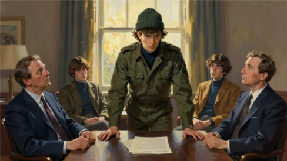

November 1965. Malibu Beach ↔ San Diego.
The idea? A new type of television show about a faux rock band. Entertainment > Music.
The cameras pointing at four guys pointing at the label being applied: manufactured.
The expectation? To perform on screen rather than shape the recordings themselves.
Actors playing ‘musicians’ ↔ Studio professionals generating songs for the ‘band’.
Enter Michael Nesmith. Songwriter. Performer.
Just a musician in a wool hat. Pulled down over his ears.
Standard issue for a quiet Texan working in sunny California.
He already had a hit surfing the charts prior to any of this.
Different Drum, recorded by Linda Ronstadt.
Real artist. Actual credits. Credibility.
The label? Just a Monkee → stuck anyway.
On September 12, 1966, the television show premiered and was an instant smash hit → Monkeemania had arrived.
Nesmith could’ve played along, lip-synced the songs other people recorded for him, said his lines, taken the paycheck and cashed in.
He didn’t.

He pushed back, argued with the producers of the show, and demanded the band play its own instruments and record its own material. He fought for creative control inside a system designed specifically to keep him from having any at all. And his efforts? Paid dividends.
Thanks to his efforts, in 1967 a shift in production occurred culminating in the album Headquarters. Written, recorded, and played by the actors — number one on the charts and went head-to-head with Sgt. Pepper’s Lonely Hearts Club Band.
Think about that for a second.
A manufactured ‘faux’ pop band critics had already written off as a TV gimmick went toe-to-toe with the Beatles and held their own and all because Nesmith refused to play the role he’d been assigned and insisted on being treated like the real musician, he was.
In 1970? He left The Monkees, but the label didn’t leave him.
Every interview. Every review. Every conversation was about whether his work counted.
So he did what he always did. Moved past it.
In the 1970s he started making something nobody had a name for yet: the combination of music and film. Short films built around songs, narrative imagery, and cinematography. Music as structure > soundtrack.
This wasn’t how music was supposed to work. Music was audio. If you wanted to see musicians, you bought a concert ticket. His video for Rio told a story, had characters, and treated the song like a film.
In 1974 he founded Pacific Arts. A powerhouse in the independent record and home video distribution systems.
In 1979, working with Norman Lear, he built PopClips — a TV program of curated music videos with on-screen hosts that aired on Nickelodeon. People got to watch music. Not listen. Watch. Cable executives took notes.
In 1981 the concept expanded into a 24-hour channel called it MTV. Did Nesmith get the credit? Didn’t have to. He’d done what he always did: seen where culture was heading, built the infrastructure to get there, and moved on while everyone else caught up.
In 1982 he won the first-ever Grammy for a music video: Elephant Parts. Imagine winning an award for a category you had to invent before anyone could actually win one.
And the label? Just a Monkee. → Stuck. All the way through.
Every time he built something new, dismissal came with it.
Manufactured. Gimmick. Not a real musician.
He passed on December 10, 2021 at the age of 78.
The guy in the wool hat. The “fake” musician.
A Texan who refused to stay where they put him.
He saw that music was becoming something you watched. And the industry transformed because someone they’d dismissed as manufactured kept pushing forward into territory nobody else had mapped.
He was told he wasn’t a real musician and invented the future of music anyway.